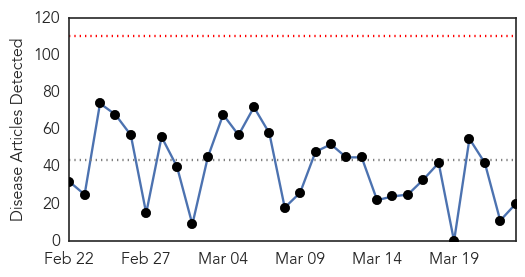
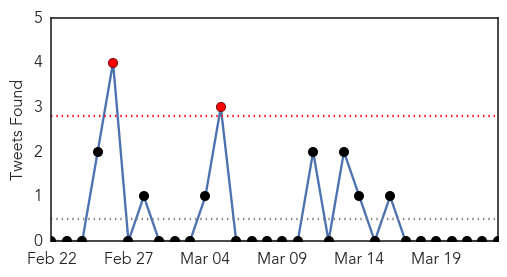

30 Day Trends
Web: 0 alerts, 0 warnings
Twitter: 2 alerts, 0 warnings
Top Articles:
- 0.955
- PH among top nations with TB, says WHO
- 0.917
- Chicago Tribune
- 0.917
- Chicago Tribune
- 0.917
- Chicago Tribune
- 0.917
- Chicago Tribune
- 0.917
- Chicago Tribune
- 0.910
- The world windows to Thailand
- 0.906
- Little effort from private sector to fight TB
- 0.874
- Public sector healthcare facilities fail to implement DOTS
- 0.866
- Russian troops trying to seize Ukraine navy base in Crimea -officer
- 0.866
- Syria says Turkey shot down plane pursuing rebels inside Syria
- 0.866
- Turkey shot down Syrian plane which violated air space
- 0.858
- A million children a year develop tuberculosis study
- 0.763
- Study:32,000 kids develop drug-resistant TB each year
- 0.760
- Vaccine could prevent cancer
- 0.724
- Ghana to mark World TB Day
- 0.691
- Vaccine against Glandular Fever ‘could prevent cancer’
- 0.617
- Scientists move a step closer to treating cancer-causing herpes
- 0.551
- TB Still Major Health Concern in Indonesia
- 0.502
- Cebu Lifestyle, The Freeman Sections, The Freeman
Top Tweets:
-
No tweets found for Mar 23, 2014
Web/News Articles
Tweets
Article Locations

Article Confidences